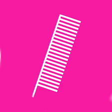

 <div class="logo-and-resources">
        <div class="nav-links-left">
            <ul class="nav-links">
                <li class="dropdown">
                    <a>RESOURCES<span class="dropdown-arrow">&#9662;</span></a>
                    <ul class="dropdown-content">
                        <li><a href="youtube.html" target="_blank"><i class="fab fa-youtube" style="color: white;"></i> What is Haircomb?</a></li>
                        <li><a href="youtube.html" target="_blank"><i class="fab fa-youtube" style="color: white;"></i> How to get Haircomb</a></li>
                        <li><a href="docs.html" target="_blank">Documentation</a></li>
                        <li><a href="https://github.com/natasha-otomoski/haircomb/blob/master/WhyTheCombOfNatashaOtomoskiHas21Teeth.txt" target="_blank">Whitepaper</a></li>
                    </ul>
                </li>
            </ul>
        </div>
    </div>
    <div class="nav-links-center">
        <ul class="nav-links">
            <li><a href="index.html">OVERVIEW</a></li>
            <li></li>
            <li><a href="claim.html">CLAIM</a></li>
        </ul>
    </div>    
    <div class="nav-links-right">
        <ul class="nav-links">
            <li><a href="https://core.haircomb.org/ui/index.html" target="_blank">WALLET</a></li>
        </ul>
    </div>
    

